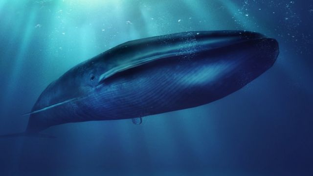

La ballena azul, también conocida como rorcual azul, es una especie de cetáceo misticeto de la familia Balaenopteridae.
- La ballena azul o rorcual azul es una especie de cetáceo misticeto, es decir, que no tiene dientes.
- De cuerpo alargado, las hembras son de mayor tamaño que los machos,
- Son muy duros y resisten con facilidad las temperaturas extremas y la falta de agua
- De cuerpo alargado, las hembras son de mayor tamaño que los machos,
- al igual que los ejemplares que se encuentran en el hemisferio sur son mayores (27-30 m) que los del norte (23-24,5 m).
Regresar a la página de Inicio